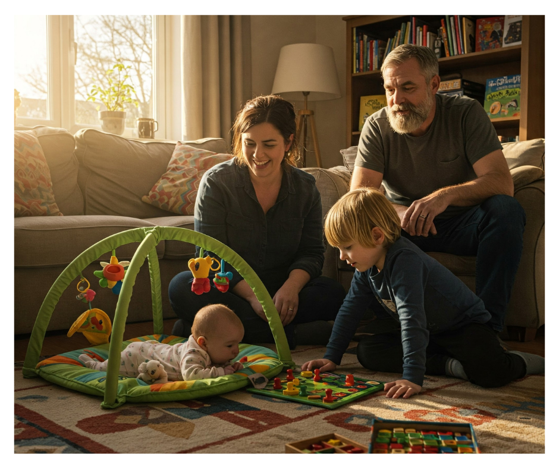
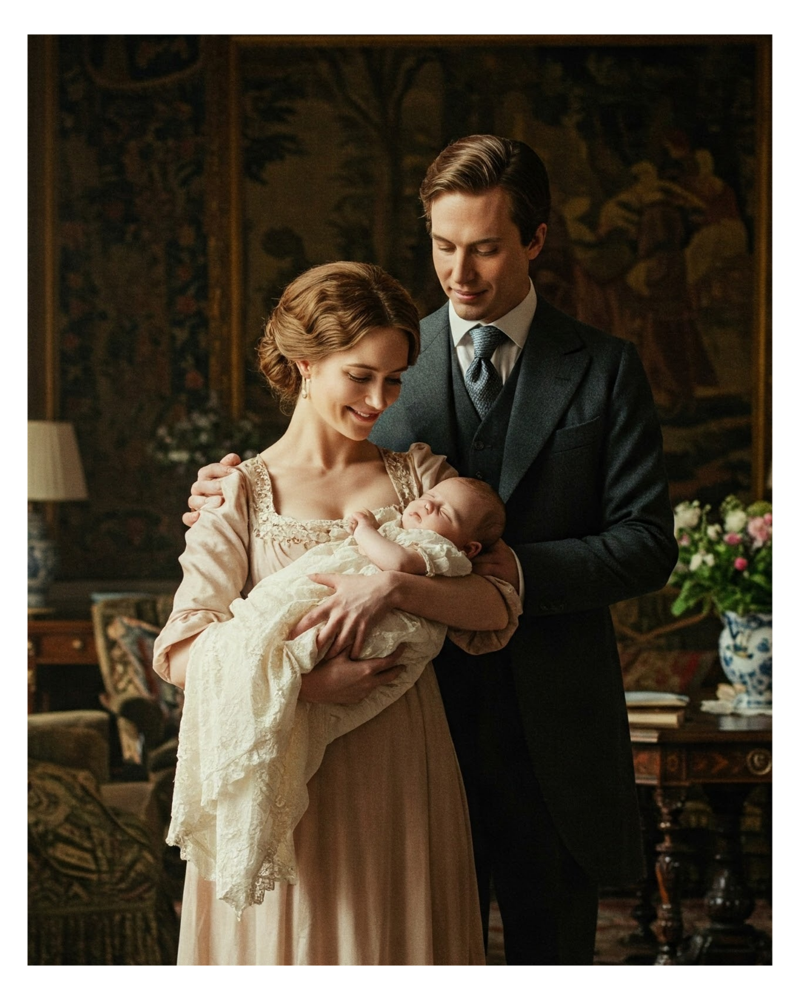
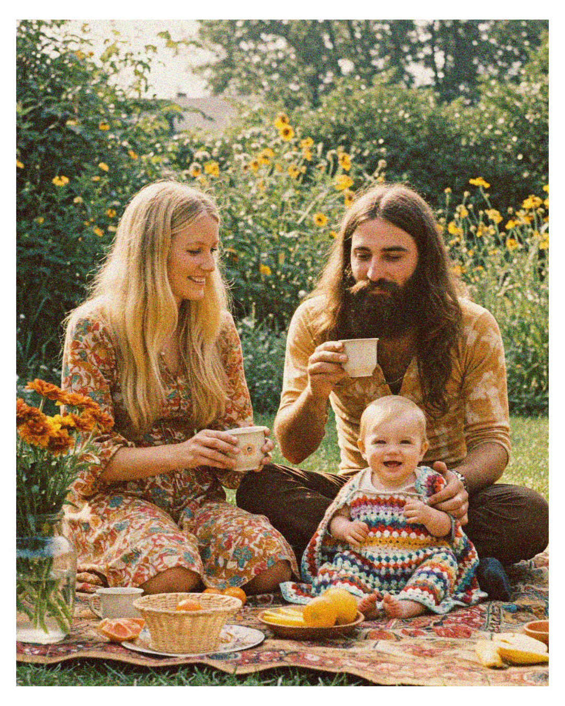

Unique & Uncommon English Name Ideas
Published: April 18, 2025

Choosing a name for a new arrival is one of the most exciting, and sometimes daunting, parts of welcoming a child. It's a decision filled with hopes, dreams, and the desire to find something that feels just right. For many parents-to-be, the search extends beyond the familiar sounds heard echoing across playgrounds and listed at the top of popularity charts. Looking for a name that stands out from the crowd? This curated list explores unique English names, delving into their origins and meanings for inspiration beyond the most common choices. The journey to find a name less ordinary can be a wonderful adventure, uncovering hidden gems and stories waiting to be told. A unique name can be a special gift, a first chapter in a child's individual story.
The quest for uniqueness in naming reflects a broader cultural moment. Perhaps it's a desire for individuality in an increasingly connected world, a way to honor specific heritage, or simply the joy of discovering a beautiful name that isn't shared by several others in the same class. Whatever the motivation, this exploration serves as a guide on that exciting path, offering pathways to names that resonate with distinction and charm.
What Does "Uncommon" Mean in a World of Olivias and Noahs?
The idea of an "uncommon" name is, of course, relative. What feels rare in one community might be familiar in another. Thankfully, official statistics provide a useful map of the naming landscape. Government bodies like the Social Security Administration (SSA) in the United States, the Office for National Statistics (ONS) in the UK, Statistics Canada, and various state registries in Australia meticulously compile data on the names given to babies each year. These lists clearly show which names currently occupy the top spots.
Certain names consistently appear at the very peak of popularity across major English-speaking nations. These form the "Top Tier" – names chosen frequently by parents year after year. Understanding this popular crowd helps define the territory of the truly uncommon.
Table 1: The Popular Crowd - Recent Top 5 Baby Names
| Country | Rank | Boy Name | Girl Name | Data Year |
|---|---|---|---|---|
| US | 1 | Liam | Olivia | 2023 |
| US | 2 | Noah | Emma | 2023 |
| US | 3 | Oliver | Charlotte | 2023 |
| US | 4 | James | Amelia | 2023 |
| US | 5 | Elijah | Sophia | 2023 |
| UK (Eng/Wales) | 1 | Muhammad | Olivia | 2023 |
| UK (Eng/Wales) | 2 | Noah | Amelia | 2023 |
| UK (Eng/Wales) | 3 | Oliver | Isla | 2023 |
| UK (Eng/Wales) | 4 | Leo | Lily | 2023 |
| UK (Eng/Wales) | 5 | Arthur | Freya | 2023 |
| Canada | 1 | Noah | Olivia | 2023 |
| Canada | 2 | Liam | Emma | 2023 |
| Canada | 3 | Oliver | Charlotte | 2023 |
| Canada | 4 | Lucas | Amelia | 2023 |
| Canada | 5 | William | Sophia | 2023 |
| Australia (NSW) | 1 | Noah | Charlotte | 2024 |
| Australia (NSW) | 2 | Oliver | Amelia | 2024 |
| Australia (NSW) | 3 | Leo | Isla | 2024 |
| Australia (NSW) | 4 | William | Olivia | 2024 |
| Australia (NSW) | 5 | Theodore | Mia | 2024 |
| Australia (Vic) | 1 | Oliver | Isla | 2024 |
| Australia (Vic) | 2 | Noah | Charlotte | 2024 |
| Australia (Vic) | 3 | Leo | Amelia | 2024 |
| Australia (Vic) | 4 | Jack | Olivia | 2024 |
| Australia (Vic) | 5 | Henry | Mia | 2024 |
| Australia (WA) | 1 | Noah/Oliver (tie) | Charlotte/Isla (tie) | 2024 |
| Australia (WA) | 2 | Leo | Amelia | 2024 |
| Australia (WA) | 3 | Henry | Olivia | 2024 |
| Australia (WA) | 4 | Luca | Harper | 2024 |
| Australia (WA) | 5 | Jack | Mia | 2024 |
Note: Data reflects the most recent available year from sources, typically 2023 or early 2024 state/territory data for Australia. Rankings can shift slightly year to year. Sources: SSA, ONS, StatCan, NSW/Vic/WA Gov.
This table visually establishes the baseline of "common" names... justifying the search for uniqueness.
For the purposes of this exploration, "uncommon" generally refers to names found outside the Top 500 or even Top 1000... The focus here is on names offering genuine distinctiveness in the current naming climate.
Spark Your Imagination: Where Unique Names Hide
Unique names aren't just random collections of letters... Consider this section a series of treasure chests, each holding different styles of uncommon gems.
Echoes from the Attic: Charming Vintage Revivals
There's a definite trend towards rediscovering names that might have belonged to grandparents or great-grandparents... Think beyond the currently popular vintage choices like Evelyn or Theodore and explore slightly more unusual options.
Wild & Wonderful: Inspired by Nature's Beauty
Nature remains a powerful and enduring source of name inspiration... These choices often feel grounded, serene, or adventurous.
Storied & Special: Names from Myths, Legends & Literature
Names drawn from mythology (Greek, Roman, Norse, Celtic), classic literature, Arthurian legends, or significant historical figures carry an inherent romance and weight... They connect a child to grand narratives and timeless tales, often possessing strong sounds and intriguing backstories.
Words with Meaning: Unique Nouns & Concepts
A growing trend involves using evocative "word names"... They offer a modern, straightforward appeal.
Family Ties & Formal Flair: Surname-Style Names
Using surnames as first names is another popular avenue for finding distinctive options... Many have British or Irish origins.
A Curated Collection of Uncommon English Gems
The following list offers a starting point, featuring names drawn from the categories above...
For Girls:
- Araminta: (English) Likely a literary invention...
- Avalon: (Welsh) "Island of apples"...
- Bryony: (Greek) From a type of climbing vine...
- Calliope: (Greek) "Beautiful voice,"...
- Cassia: (Greek/Latin) From the cassia tree...
- Demelza: (Cornish) From a place name in Cornwall...
- Elestren: (Cornish) "Iris" (the flower)...
- Fifer: (Scottish/English) Occupational name...
- Ginevra: (Italian/Welsh) Italian form of Guinevere...
- Isolde: (Welsh/Germanic) Meaning uncertain...
- Jessamine: (Persian) Variant of Jasmine...
- Kerensa: (Cornish) "Love."...
- Linnea: (Swedish) Named after the twinflower...
- Morwenna: (Welsh/Cornish) "Waves of the sea"...
- Odette: (French/German) "Wealthy."...
- Paloma: (Spanish) "Dove."...
- Romilly: (French/Latin) From a French place name...
- Sunniva: (Norwegian/Old English) "Sun gift."...
- Theodosia: (Greek) "Giving to God."...
- Vesper: (Latin) "Evening star; Evening prayer."...
- Winsome: (English) "Charming, agreeable."...
- Xanthe: (Greek) "Golden, yellow."...
- Zella: (German/Hebrew/African) Meaning uncertain...
For Boys:
- Albion: (Latin/English) "White land,"...
- Alaric: (Germanic) "Ruler of all."...
- Barnaby: (Aramaic/Saxon) "Son of consolation"...
- Bastian: (Greek) Short form of Sebastian...
- Cassian: (Latin) Possibly "vain"...
- Cormac: (Irish) "Charioteer"...
- Diggory: (French/Cornish?) Possibly "strayed"...
- Evander: (Greek) "Good man."...
- Finnian: (Irish) "Fair."...
- Gareth: (Welsh) Meaning uncertain...
- Idris: (Welsh/Arabic) "Ardent lord"...
- Leander: (Greek) "Lion-man."...
- Lysander: (Greek) "Liberator."...
- Oberon: (Germanic) "Noble bear"...
- Orion: (Greek) Mythological giant hunter...
- Peregrine: (Latin) "Traveler, foreigner, pilgrim."...
- Quentin: (Latin) "Fifth."...
- Rafferty: (Irish) "Prosperous."...
- Stellan: (Swedish/German?) Possibly "calm"...
- Thackeray: (English) Surname, possibly "place with thatched roofs."...
- Torin: (Irish) "Chief."...
- Valerian: (Latin) From Roman family name Valerius...
- Zephyr: (Greek) "West wind."...
Gender Neutral:
- Arden: (British/Celtic) "Great forest"...
- Bellamy: (French) "Handsome friend; Fine friend."...
- Blair: (Scottish) "Field, plain, battlefield."...
- Darcy: (French/Irish) From French place name d'Arcy...
- Ellis: (Welsh/English) Welsh form of Elijah...
- Hollis: (English) Surname meaning "dweller near the holly trees."...
- Indigo: (Greek via Spanish) "From India,"...
- Larkin: (Irish) Diminutive of Lorcan...
- Merritt: (English) Surname possibly meaning "boundary gate."...
- Quincy: (French/Latin) From Roman name Quintus...
- Ridley: (English) Surname meaning "reed clearing."...
- Sorrel: (French/Germanic) Reddish-brown color...
- Sutton: (English) Surname meaning "southern settlement."...
- Tierney: (Irish) Surname meaning "descendant of a lord."...
- Willoughby: (English) Surname meaning "willow farm."...
- Zenith: (Arabic via French/Latin) "Highest point,"...
Why Choose the Road Less Traveled? The Joy of a Unique Name
Choosing a name that isn't in the Top 100... holds a special appeal...
Finding Your One-of-a-Kind Treasure
Ultimately, the "perfect" name is the one that resonates most deeply... Trust your intuition and enjoy the process...
Works Cited
- Popular Baby Names | SSA...
- Baby names in England and Wales - ONS...
- The most popular baby names of 2023 - StatCan...
- Popular baby names | NSW Gov...
- 200 Unique Word Names | Nameberry...
- Baby Name Trends 2025 | Nameberry...